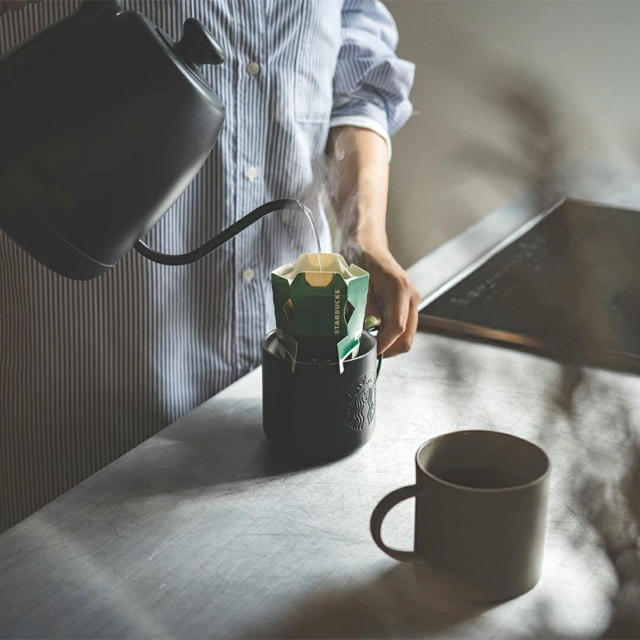
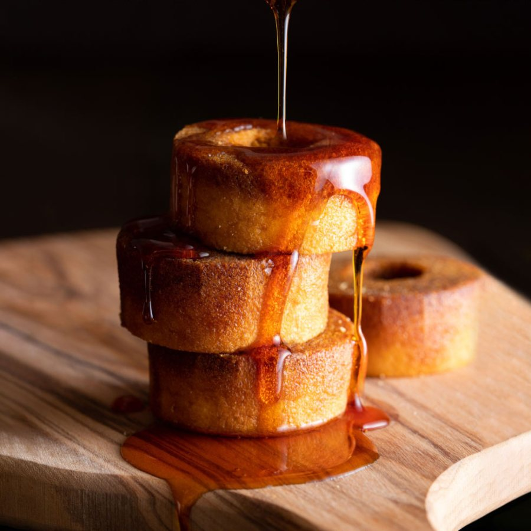
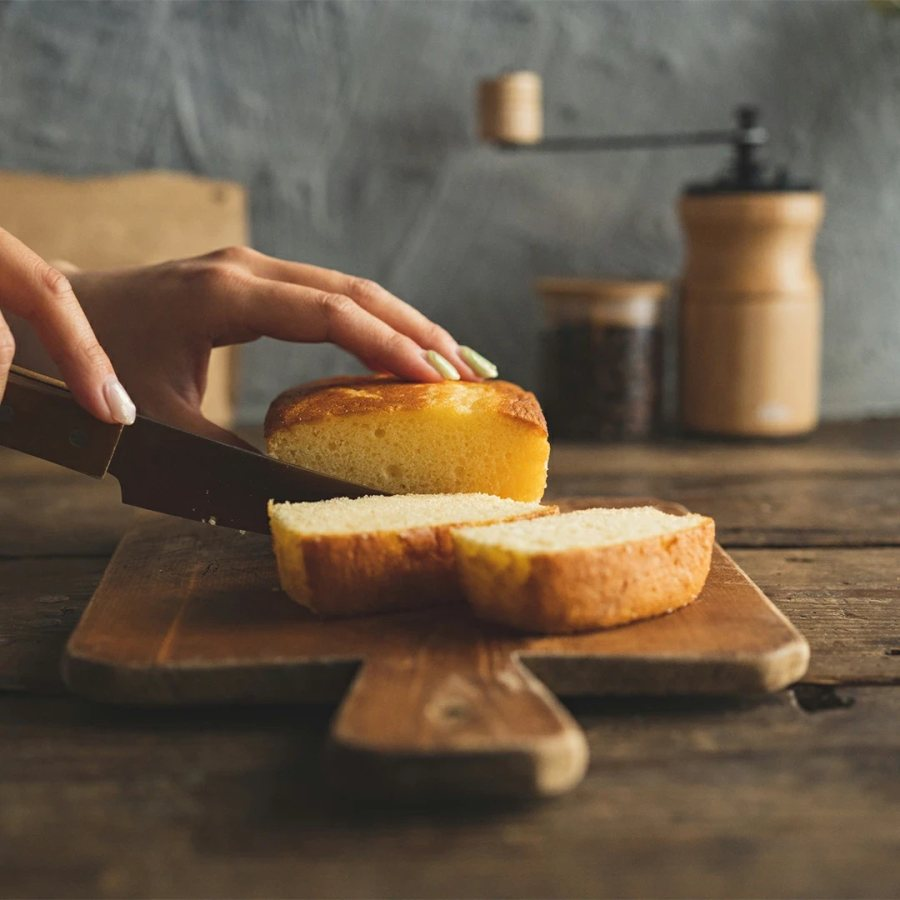

アイプレゼンツ社員研修
クリエイティブの力
丁寧に盛って選ばれ
リアルで愛される
盛るLIGHT & RETOUCH
リアルNO FILTER



ここでの「盛る」は
作り物ではありません
本物の商品を
ライティングとレタッチで
より美味しく見せることです
より美味しそうに より可愛く より高級に。画面越しでも一瞬で伝わるように 工夫を重ねてきました。
ECでも まったく同じことが起きています
検索結果の一覧で お客様は1つずつ読んでくれません。目に入った瞬間に 見るか見ないかが決まります。
大切なのは
「心がある丁寧さ」
ていねいに作ったものを
一瞬で伝える
私がいつも大切にしていることがあります。
人数と顔を思い浮かべてから 作りはじめます
きれいなだけの写真は 当たり前になりました。それどころか「本物かな」と 疑われるようにもなっています。
誰でも数秒で何枚でも
これ AI？
作られていない一枚が
いちばん信じてもらえる時代 ともいえます
最近 私も始めました。使ってみて はじめて見えたことがあります。
人は 作られていない瞬間に
ほっとするのかもしれない
使ってみないと なぜ人気なのかもわからない。
だから私は なんでも使います。
あなたの2秒ここに動画をドロップ
またはクリックで選択
CAUTION盛りすぎて実物とズレると 低評価やリピートされない原因に。行き過ぎれば景品表示法の優良誤認のリスクもあります。
期待を裏切っていない証拠
皆さんのリアルには もう力がある
2026年10月30日時点
楽天市場 ショップページより
だからこそ 実物がわかることが いちばんの安心材料になります。
作り込んだ写真より 開けた瞬間のリアルが 心に届きます。
スマホ1台で撮れるものばかりです。
SHOT 012 SEC
ていねいさが伝わる
SHOT 02STILL
印刷の質感とサイズ感
SHOT 032 SEC
届いたときの景色
SHOT 042 SEC
マナーの安心
SHOT 052 SEC
即日出荷の裏側
まずはここから
となりの人と話してみてください
リアルの価値を
高めるためには
どうしたらいいか
これが 今後の課題かもしれません
丁寧に盛って選ばれ
リアルで愛される
THANK YOU — GREEN TSUSHO × i-PRESENTS